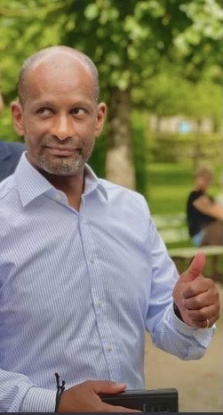

STUDIO MATTHIEU PRESENTE
L'HISTOIRE
DE PAPA
1968 ● 2026
MODE HISTOIRE
MUSIQUE : ON
CREDITS
FAIT AVEC ♥ PAR TON FILS
POUR TES 58 ANS — 14 . 09 . 2026
APPUIE SUR ENTREE
CHAPITRE 1 / 6
⏮ PREC.
⏸ PAUSE
SUIV. ⏭
MENU
OUI
NON
BON ANNIVERSAIRE
PAPA
58 ANS ● 14 . 09 . 2026

Merci pour tout. On t'aime.
↻ REVOIR
MENU
♪ SON : ON